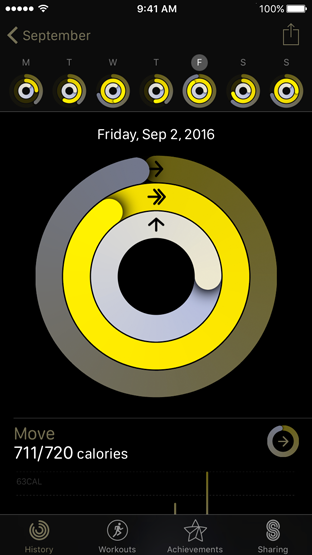

Color 颜色


在iOS，颜色能够暗示可交互性、增加活力以及提供视觉的连续性。在挑选app色调的颜色时，请参考系统的色彩方案，以保证这些颜色无论是单独还是组合、在浅色背景还是深色背景上都看起来很棒。

在app内使用互补的颜色（Use complementary colors throughout your app. ）。你的app内的颜色应该和谐共处，不会互相冲突和干扰。如果你的app风格的基础色调是柔和的，那么使用一系列与之协调的柔和色调。
一般来说，选择与你的app logo相符的颜色数量有限的色板（In general, choose a limited color palette that coordinates with your app logo. ）。巧妙地使用颜色是一个传达品牌的好办法。
考虑在app中统一使用一种关键色来暗示交互性（Consider choosing a key color to indicate interactivity throughout your app.）。在Note中，可交互的元素是黄色的。在Calendar中，可交互的元素是红色的。如果你定义了一种关键色用于传递可交互性，那么你要保证其它颜色不会与之冲突。
避免给可交互和不可交互的元素使用相同的颜色（Avoid using the same color for interactive and noninteractive elements.）。如果可交互和不可交互的元素是同一种颜色， 用户就很难知道到底哪里是可点击的。
R 255
G 59
B 48
R 255
G 149
B 0
R 255
G 204
B 0
R 76
G 217
B 100
R 90
G 200
B 250
R 0
G 122
B 255
R 88
G 86
B 214
R 255
G 45
B 85


Consider how artwork and translucency affect nearby colors. Variations in artwork sometimes warrant changes to nearby colors in order to maintain visual continuity and prevent interface elements from becoming overpowering or underwhelming. Maps, for example, displays a light color scheme when using map mode but switches to a dark color scheme when satellite mode is activated. Colors can also appear different when placed behind a translucent element, or when applied to a translucent element, such as a toolbar.


Light color scheme

Dark color scheme

Apply color profiles to your images. The default color space on iOS is Standard RGB (sRGB). To ensure that colors are correctly matched to this color space, make sure your images include embedded color profiles.
Use wide color to enhance the visual experience on compatible devices. Wide color displays support a P3 color space that can produce richer, more saturated colors than sRGB. When the experience calls for vivid colors, use the Display P3 color profile at 16 bits per pixel (per channel) and export in .png format.

TIP
On Macs with wide color displays, you can use the system color picker to select and preview P3 colors, and to compare them with sRGB colors.


Test your app’s color scheme under a variety of lighting conditions. Lighting varies significantly both indoors and outdoors, based on room ambiance, time of day, the weather, and more. Colors you see on your computer won’t always look the same when your app is used in the real world. Always preview your app under multiple lighting conditions, including outdoors on a sunny day, to see how colors appear. If necessary, adjust colors to provide the best possible viewing experience in the majority of use cases.
Consider how the True Tone display affects color. The True Tone display uses ambient light sensors to automatically adjust the white point of the display to adapt to the lighting conditions of the current environment. Apps that focus primarily on reading, photos, video, and gaming can strengthen or weaken this effect by specifying a white point adaptivity style. For implementation details, see Information Property List Key Reference.


As seen without color blindness.

As seen with red-green color blindness.

Be aware of colorblindness and how different cultures perceive color. People see colors differently. Many colorblind people, for example, find it difficult to distinguish red from green (and either color from gray), or blue from orange. Avoid using these color combinations as the only way to distinguish between two states or values. For example, instead of using red and green circles to indicate offline and online, use a red square and a green circle. Some image-editing software includes tools that can help you proof for colorblindness. Also consider how your use of color might be perceived in other countries and cultures. In some cultures, for example, red is used to communicate danger. In others, red has positive connotations. Make sure the colors in your app send the appropriate message.
Use sufficient color contrast ratios. Insufficient contrast in your app makes content hard to read for everyone. Icons and text might blend with the background, for example. An online color contrast calculator can help you accurately analyze the color contrast in your app, to ensure that it meets optimal standards. Strive for a minimum contrast ratio of 4.5:1, although 7:1 is preferred because it meets more stringent accessibility standards.